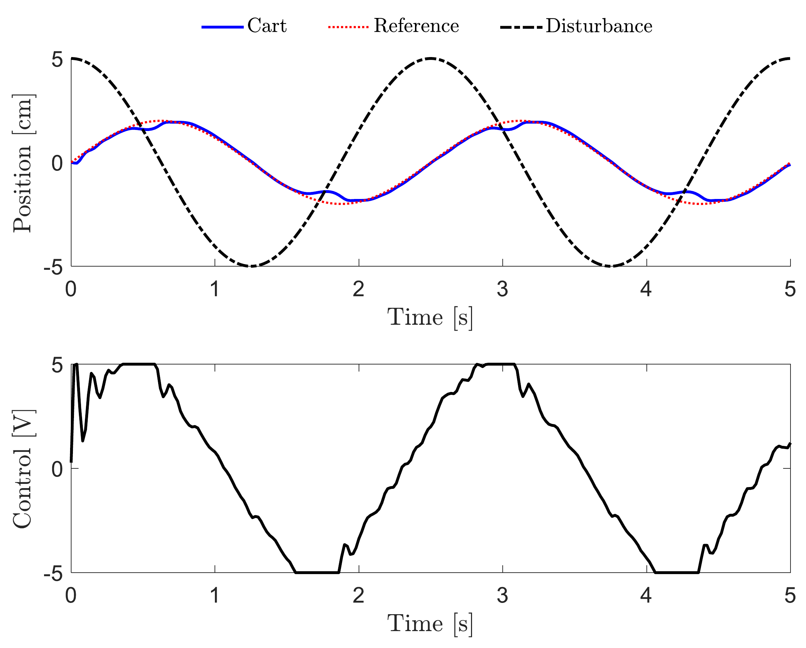
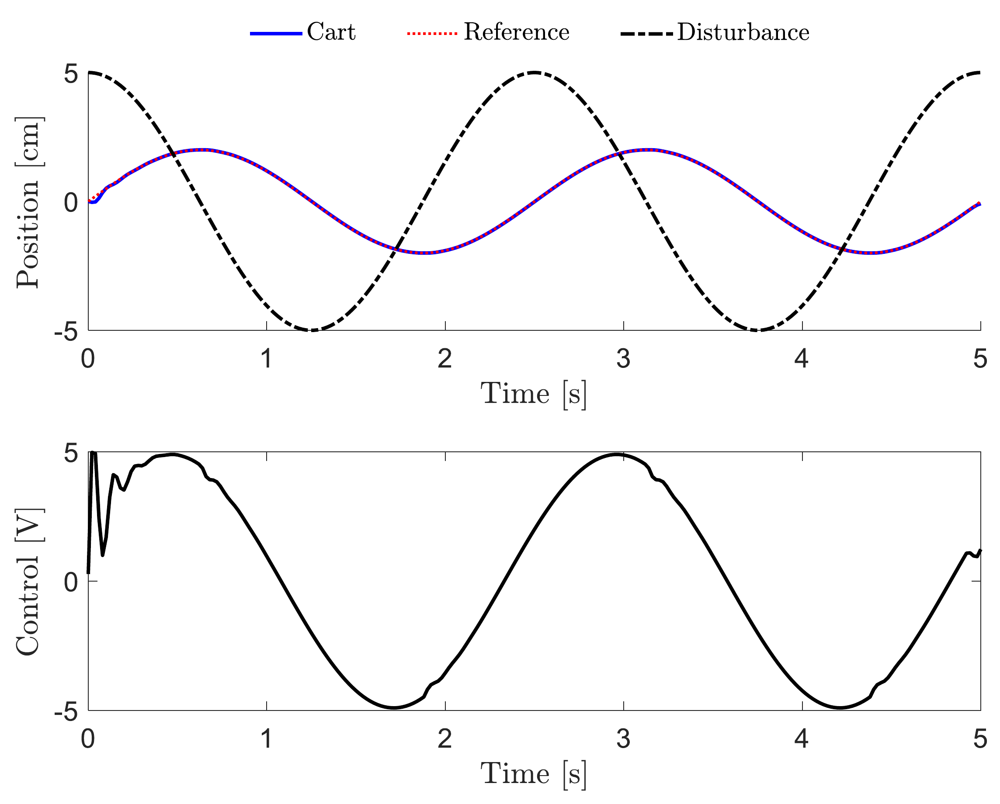
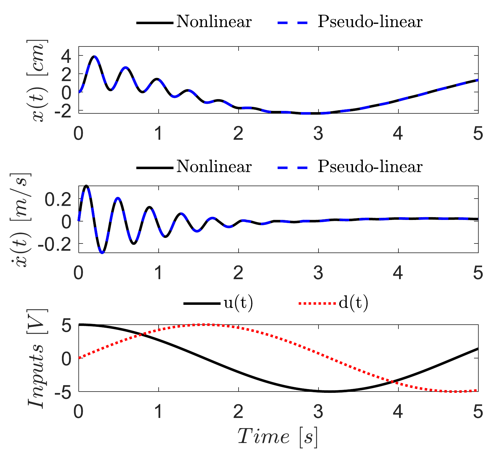

Dynamics & controls
Model predictive control
Constrained control, tested in simulation and on hardware.
- Timeline
- Jan — Feb 2025
- Context
- Simulation + hardware
- Tools & methods
Team: Jacob Cockerill, Prithvi Vijaykrishnan

Overview
We formulated and implemented model predictive control for a single-degree-of-freedom spring–mass–damper cart in an Advanced Controls course project. Using the supplied physical model and laboratory framework, we connected prediction-model simulation, constrained quadratic optimization, and hardware testing.
Building the prediction model
Starting from the supplied system equations, we implemented nonlinear and pseudo-linear models in MATLAB. Before using the pseudo-linear model for prediction, we compared its position and velocity responses with the nonlinear simulation under the same control and disturbance inputs. The responses closely overlap in the reported comparison.
Formulating the controller
We discretized the prediction model and interpolated the reference and disturbance trajectories. We manually assembled the quadratic objective to balance tracking error against control effort, together with system-dynamics equality constraints and ±5 V motor-input limits. A code-generation-compatible quadratic-programming solver solved the problem within Simulink. Receding-horizon control applies the first optimized command and solves the problem again at the next control step.
Testing on hardware
We integrated the controller into the supplied MATLAB/Simulink laboratory framework and compared the cart’s experimental response with the simulation. In the five-second record shown here, the measured position follows the periodic reference with visible local deviations, while the motor command reaches the ±5 V limits. The experiment demonstrates tracking for this test case; broader robustness testing was identified as follow-up work.
Project details

Open full-size figure

Open full-size figure